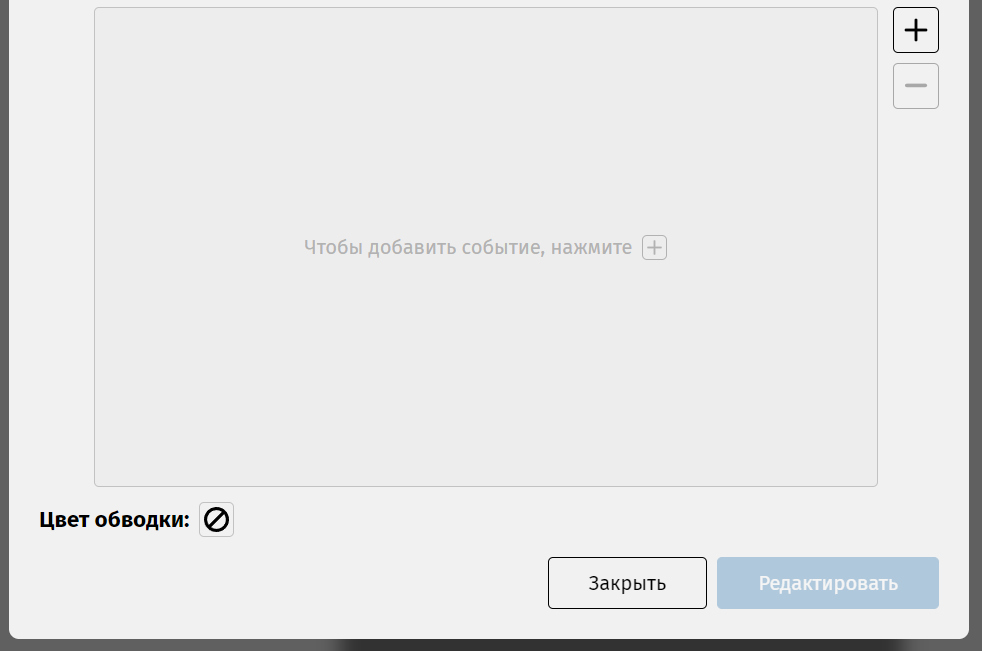
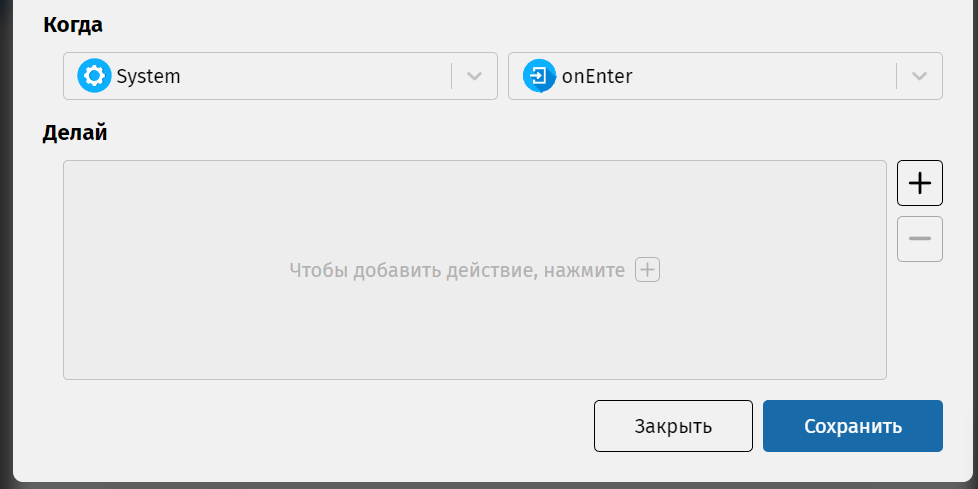
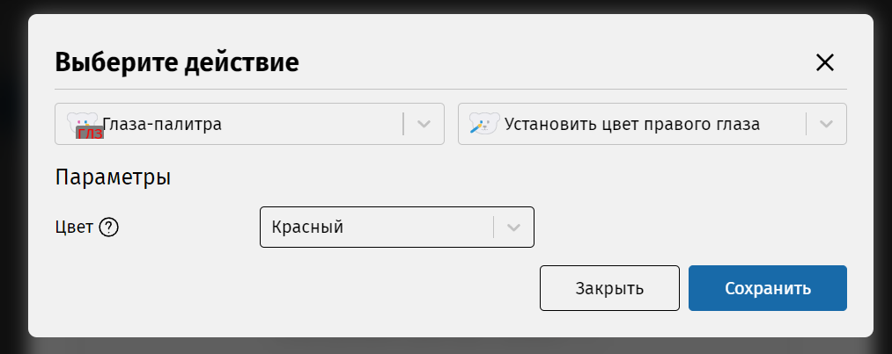
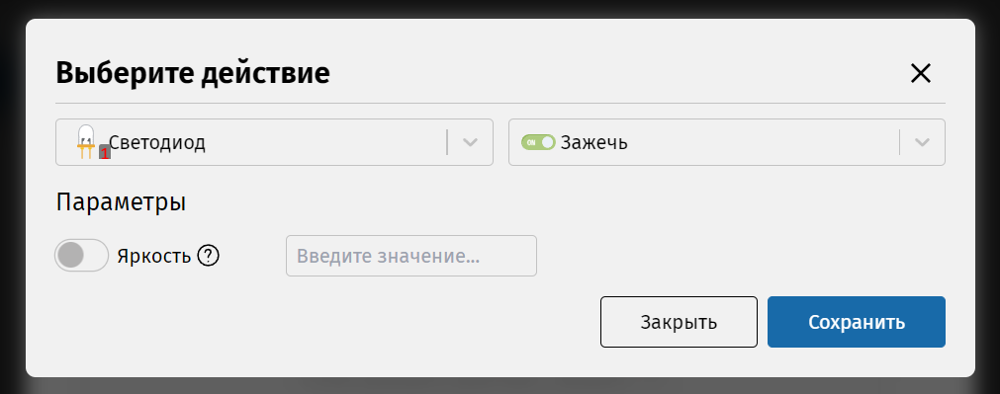

Для того, чтобы зажечь светодиод или глаз для КиберМишки, нужно указать соответствующее действие в событии входа для состояния «Включен». Нажмите дважды левой кнопкой мышки на пустой области этого состояния. Появится диалоговое окно для его редактирования. Нажмите знак плюса для добавления нового события.
Вам откроется следующее окно. Вверху в левом выпадающем списке выберите компонент, по умолчанию стоит «System» (он содержит системные события, не относящиеся к компонентам), а в правом выпадающем списке – событие «onEnter» (так в IDE называется событие «entry/»).
Теперь нажмите кнопку с плюсом справа от области «Делай». В левом списке нужно выбрать компонент, а в правом – действие для включения светодиода. Для каждого пункта списка доступна всплывающая подсказка, объясняющая, за что отвечает выбранное действие.
Выберите компонент «Глаза-палитра» и действие «Установить цвет правого глаза». После этого внизу появится выпадающий список для выбора цвета. Выберите любой, который вам нравится, кроме чёрного, так как он выключает свечение глаза.
Выберите компонент «Светодиод» и действие «Зажечь».
После выбора действия, внизу появится параметр «Яркость». Если оставить это поле пустым, то будет использоваться значение по-умолчанию, которое равняется 100.
Нажмите «Сохранить». В списке раздела «Делай» появится изображение созданного вами действия. Нажмите «Сохранить» ещё раз, и на схеме появится событие с выбранным вами действием.